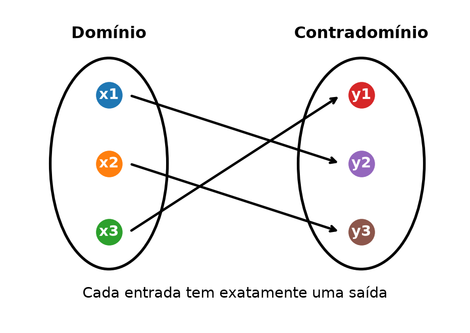
📘 Módulo 1.6: Funções Elementares
cálculo
matemática
curso
funções
pré-cálculo
Introdução às principais famílias de funções reais usadas no Cálculo: afins, quadráticas, potências, raízes, exponenciais, logarítmicas e trigonométricas.
🏠 ← Sumário do Curso · ← Cursos de Matemática · ← Seção de Matemática
🎯 Post Anterior: 👉 1.5 Equações e Inequações
Dica❓ Pergunta Disparadora
Quais são as famílias de funções mais importantes para começar o estudo do Cálculo?
Nota📌 Objetivos do Post
- Reconhecer as principais famílias de funções elementares usadas no Cálculo;
- Relacionar fórmulas algébricas, domínios e gráficos;
- Comparar comportamentos típicos: crescimento, decaimento, simetria, periodicidade e restrições de domínio.
1 📘 Funções Elementares
O Cálculo estuda variações. Mas, para estudar variações, precisamos primeiro saber o que varia em função de quê.
É aí que entra o conceito de função.
Uma função é uma regra que associa a cada elemento de um conjunto de partida exatamente um elemento de um conjunto de chegada. No curso de Cálculo de uma variável, trabalharemos principalmente com funções reais de variável real:
\[ f:D \subset \mathbb{R} \longrightarrow \mathbb{R}. \]
Isso significa que a variável de entrada \(x\) é real, os valores de saída \(f(x)\) também são reais e o domínio \(D\) é um subconjunto da reta real.
1.1 🧭 A ideia de função
Uma função pode ser entendida como uma máquina matemática:
\[ x \longmapsto f(x). \]
Você fornece um valor de entrada \(x\) e a função devolve um valor de saída \(f(x)\).
Por exemplo, se
\[ f(x)=2x+1, \]
então:
\[ f(0)=1,\qquad f(3)=7,\qquad f(-1)=-1. \]
Cada valor de \(x\) no domínio produz exatamente um valor de \(f(x)\).
NotaIdeia central
Uma função não pode atribuir dois valores diferentes a uma mesma entrada.
O diagrama de flechas abaixo ilustra essa ideia: cada elemento do domínio aponta para exatamente um elemento no contradomínio.
NotaClique para ver o código
import os
import matplotlib.pyplot as plt
from matplotlib.patches import Ellipse
os.makedirs("images", exist_ok=True)
fig, ax = plt.subplots(figsize=(6, 4.2))
ax.set_xlim(0, 10)
ax.set_ylim(0, 5.5)
ax.axis("off")
dominio = [(2.2, 4), (2.2, 2.8), (2.2, 1.6)]
contradominio = [(7.8, 4), (7.8, 2.8), (7.8, 1.6)]
elipse_dom = Ellipse((2.2, 2.8), width=2.6, height=3.7, fill=False, linewidth=2)
elipse_contra = Ellipse((7.8, 2.8), width=2.8, height=3.7, fill=False, linewidth=2)
ax.add_patch(elipse_dom)
ax.add_patch(elipse_contra)
ax.text(2.2, 5.0, "Domínio", ha="center", fontsize=12, weight="bold")
ax.text(7.8, 5.0, "Contradomínio", ha="center", fontsize=12, weight="bold")
for i, (x, y) in enumerate(dominio, start=1):
ax.scatter(x, y, s=350)
ax.text(x, y, f"x{i}", ha="center", va="center", color="white", fontsize=11, weight="bold")
for j, (x, y) in enumerate(contradominio, start=1):
ax.scatter(x, y, s=350)
ax.text(x, y, f"y{j}", ha="center", va="center", color="white", fontsize=11, weight="bold")
arrow_pairs = [(dominio[0], contradominio[1]), (dominio[1], contradominio[2]), (dominio[2], contradominio[0])]
for (x1, y1), (x2, y2) in arrow_pairs:
ax.annotate(
"",
xy=(x2 - 0.45, y2),
xytext=(x1 + 0.45, y1),
arrowprops=dict(arrowstyle="->", linewidth=1.8)
)
ax.text(5, 0.45, "Cada entrada tem exatamente uma saída", ha="center", fontsize=11)
plt.savefig("images/1-6-diagrama-flechas-funcao.png", dpi=300, bbox_inches="tight")
plt.show()1.2 📈 Funções afins
As funções afins têm a forma
\[ f(x)=ax+b, \]
com \(a\) e \(b\) reais.
O número \(a\) é o coeficiente angular. Ele mede a inclinação da reta. O número \(b\) é o coeficiente linear. Ele indica o ponto onde o gráfico corta o eixo vertical.
Exemplos:
\[ f(x)=2x+1,\qquad g(x)=-3x+4,\qquad h(x)=5. \]
Quando \(a=0\), a função é constante.
As funções afins têm gráficos que são retas. Elas são fundamentais porque representam variações com taxa constante. No gráfico abaixo, comparamos uma função com \(a>0\) e outra com \(a<0\).
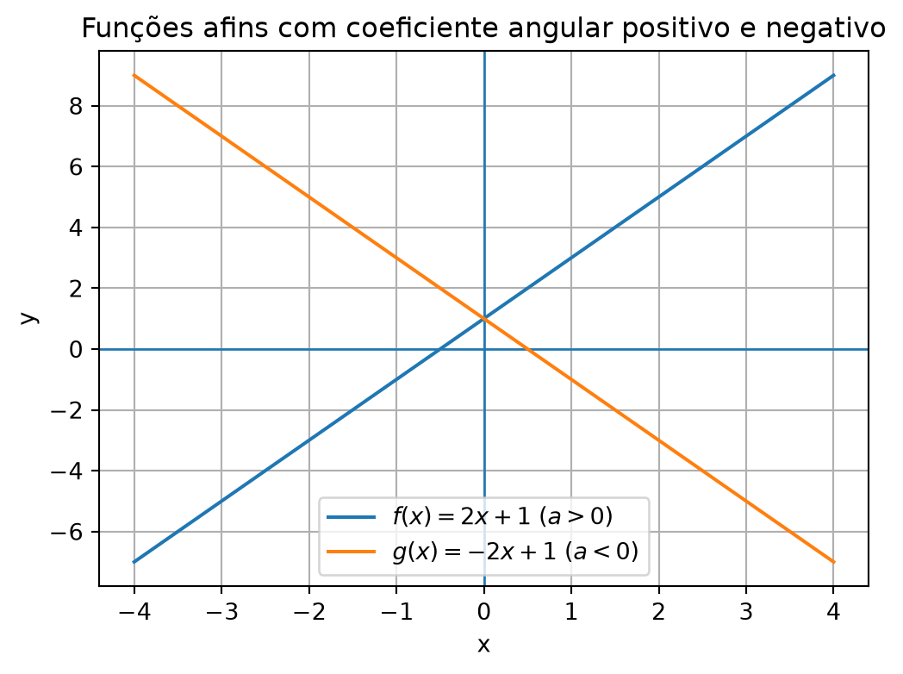
NotaClique para ver o código
import os
import numpy as np
import matplotlib.pyplot as plt
os.makedirs("images", exist_ok=True)
x = np.linspace(-4, 4, 400)
f = 2*x + 1
g = -2*x + 1
plt.figure(figsize=(6, 4.2))
plt.axhline(0, linewidth=1)
plt.axvline(0, linewidth=1)
plt.plot(x, f, label=r"$f(x)=2x+1$ $(a>0)$")
plt.plot(x, g, label=r"$g(x)=-2x+1$ $(a<0)$")
plt.title("Funções afins com coeficiente angular positivo e negativo")
plt.xlabel("x")
plt.ylabel("y")
plt.grid(True)
plt.legend()
plt.savefig("images/1-6-funcoes-afins-a-positivo-negativo.png", dpi=300, bbox_inches="tight")
plt.show()1.3 🪃 Funções quadráticas
As funções quadráticas têm a forma
\[ f(x)=ax^2+bx+c, \]
com \(a\neq 0\).
O gráfico de uma função quadrática é uma parábola.
Se \(a>0\), a parábola tem concavidade voltada para cima. Se \(a<0\), a concavidade é voltada para baixo.
Exemplos:
\[ f(x)=x^2,\qquad g(x)=-x^2+4x,\qquad h(x)=2x^2-3x+1. \]
As funções quadráticas aparecem em problemas de áreas, movimento, otimização e modelagem.
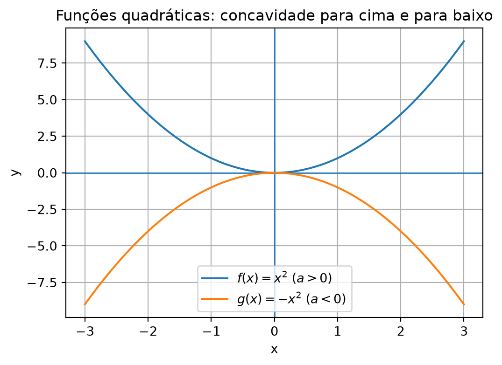
NotaClique para ver o código
import os
import numpy as np
import matplotlib.pyplot as plt
os.makedirs("images", exist_ok=True)
x = np.linspace(-3, 3, 500)
f = x**2
g = -x**2
plt.figure(figsize=(6, 4.2))
plt.axhline(0, linewidth=1)
plt.axvline(0, linewidth=1)
plt.plot(x, f, label=r"$f(x)=x^2$ $(a>0)$")
plt.plot(x, g, label=r"$g(x)=-x^2$ $(a<0)$")
plt.title("Funções quadráticas: concavidade para cima e para baixo")
plt.xlabel("x")
plt.ylabel("y")
plt.grid(True)
plt.legend()
plt.savefig("images/1-6-quadraticas-a-positivo-negativo.png", dpi=300, bbox_inches="tight")
plt.show()1.4 🔢 Funções potência
Uma função potência tem a forma
\[ f(x)=x^n, \]
em que \(n\) é um número real ou, nos casos mais básicos, um inteiro.
Exemplos importantes:
\[ f(x)=x,\qquad g(x)=x^2,\qquad h(x)=x^3,\qquad p(x)=x^{-1}=\frac{1}{x}. \]
Quando \(n\) é positivo, a função potência costuma representar crescimento algébrico. Quando \(n\) é negativo, aparecem funções racionais simples, com restrições no domínio.
Os gráficos abaixo comparam, um par por vez, \(n=1\) e \(n=-1\), \(n=2\) e \(n=-2\), \(n=3\) e \(n=-3\), \(n=4\) e \(n=-4\). A separação em figuras verticais evita gráficos muito largos e facilita a leitura em telas menores.
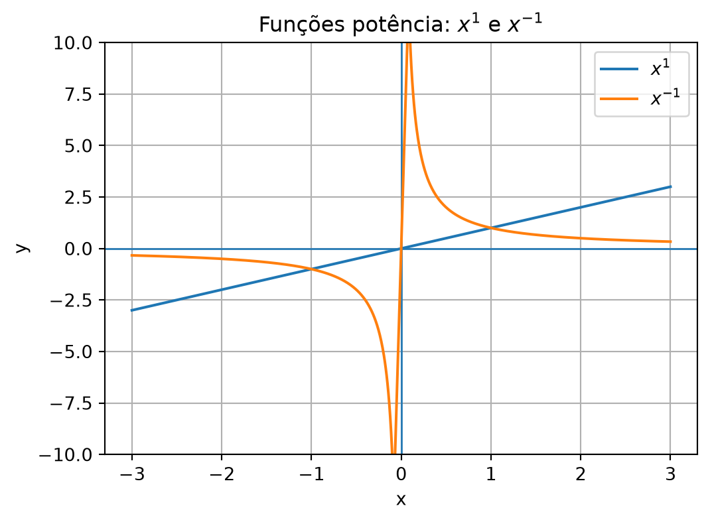
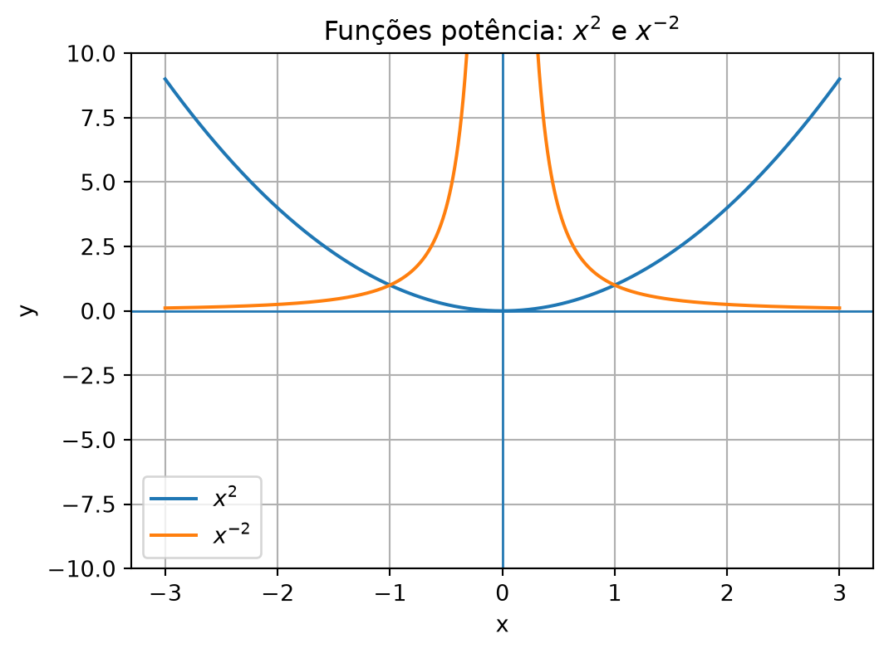
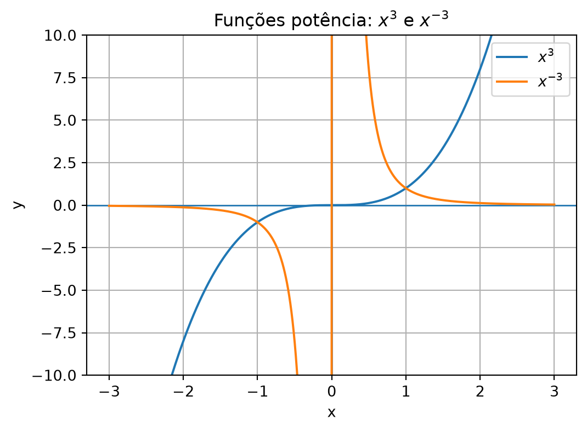
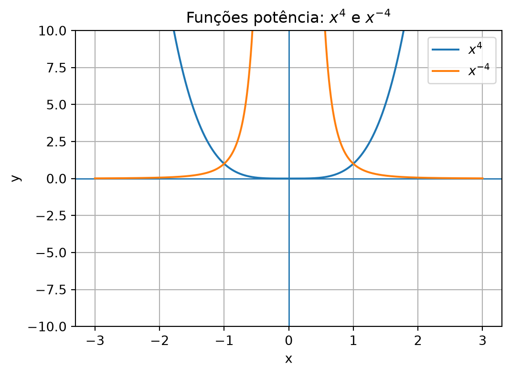
NotaClique para ver o código
import os
import numpy as np
import matplotlib.pyplot as plt
os.makedirs("images", exist_ok=True)
x = np.linspace(-3, 3, 1200)
x_no_zero = x[np.abs(x) > 0.08]
for n in [1, 2, 3, 4]:
plt.figure(figsize=(6, 4.2))
plt.axhline(0, linewidth=1)
plt.axvline(0, linewidth=1)
plt.plot(x, x**n, label=fr"$x^{n}$")
plt.plot(x_no_zero, x_no_zero**(-n), label=fr"$x^{{-{n}}}$")
plt.title(fr"Funções potência: $x^{n}$ e $x^{{-{n}}}$")
plt.xlabel("x")
plt.ylabel("y")
plt.ylim(-10, 10)
plt.grid(True)
plt.legend()
plt.savefig(f"images/1-6-funcoes-potencia-n-{n}-e-menos-{n}.png", dpi=300, bbox_inches="tight")
plt.show()1.5 √ Funções raiz
As funções raiz surgem quando tomamos potências fracionárias.
O exemplo mais importante é
\[ f(x)=\sqrt{x}. \]
Essa função está definida, no conjunto dos reais, apenas para
\[ x\geq 0. \]
Portanto, seu domínio real é
\[ [0,+\infty). \]
Outros exemplos:
\[ g(x)=\sqrt{x-2},\qquad h(x)=\sqrt{9-x^2}. \]
A determinação do domínio de funções com raiz envolve inequações, como vimos na aula anterior. O gráfico abaixo mostra esses exemplos e destaca visualmente como o domínio aparece no desenho.
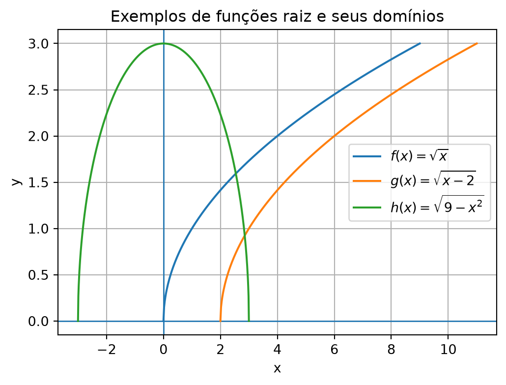
NotaClique para ver o código
import os
import numpy as np
import matplotlib.pyplot as plt
os.makedirs("images", exist_ok=True)
x1 = np.linspace(0, 9, 400)
y1 = np.sqrt(x1)
x2 = np.linspace(2, 11, 400)
y2 = np.sqrt(x2 - 2)
x3 = np.linspace(-3, 3, 500)
y3 = np.sqrt(9 - x3**2)
plt.figure(figsize=(6, 4.2))
plt.axhline(0, linewidth=1)
plt.axvline(0, linewidth=1)
plt.plot(x1, y1, label=r"$f(x)=\sqrt{x}$")
plt.plot(x2, y2, label=r"$g(x)=\sqrt{x-2}$")
plt.plot(x3, y3, label=r"$h(x)=\sqrt{9-x^2}$")
plt.title("Exemplos de funções raiz e seus domínios")
plt.xlabel("x")
plt.ylabel("y")
plt.grid(True)
plt.legend()
plt.savefig("images/1-6-funcoes-raiz-exemplos.png", dpi=300, bbox_inches="tight")
plt.show()1.6 🚀 Funções exponenciais
Uma função exponencial básica tem a forma
\[ f(x)=a^x, \]
com
\[ a>0 \]
e
\[ a\neq 1. \]
Exemplos:
\[ f(x)=2^x,\qquad g(x)=\left(\frac{1}{2}\right)^x,\qquad h(x)=e^x. \]
Quando \(a>1\), a função cresce rapidamente. Quando \(0<a<1\), ela decresce.
A função
\[ e^x \]
terá papel central no Cálculo, pois sua derivada é ela mesma:
\[ \frac{d}{dx}e^x=e^x. \]
Esse resultado será estudado mais adiante.
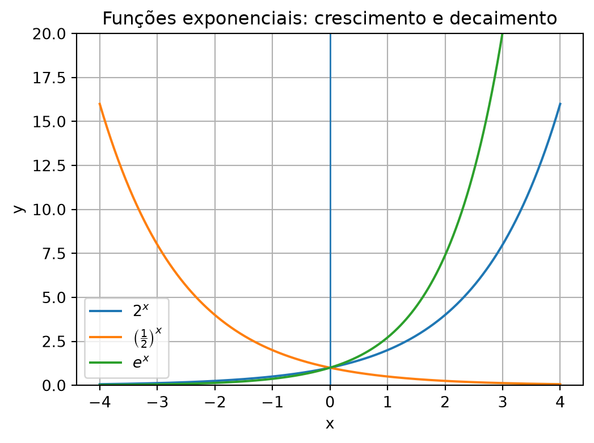
NotaClique para ver o código
import os
import numpy as np
import matplotlib.pyplot as plt
os.makedirs("images", exist_ok=True)
x = np.linspace(-4, 4, 500)
f = 2**x
g = (1/2)**x
h = np.exp(x)
plt.figure(figsize=(6, 4.2))
plt.axhline(0, linewidth=1)
plt.axvline(0, linewidth=1)
plt.plot(x, f, label=r"$2^x$")
plt.plot(x, g, label=r"$\left(\frac{1}{2}\right)^x$")
plt.plot(x, h, label=r"$e^x$")
plt.title("Funções exponenciais: crescimento e decaimento")
plt.xlabel("x")
plt.ylabel("y")
plt.ylim(0, 20)
plt.grid(True)
plt.legend()
plt.savefig("images/1-6-funcoes-exponenciais.png", dpi=300, bbox_inches="tight")
plt.show()1.7 🪞 Funções logarítmicas
A função logarítmica é a inversa da função exponencial.
A função
\[ f(x)=\log_a x \]
está definida para
\[ x>0, \]
com
\[ a>0 \]
e
\[ a\neq 1. \]
O logaritmo responde à pergunta:
A que expoente devemos elevar a base \(a\) para obter \(x\)?
Por exemplo,
\[ \log_2 8=3, \]
pois
\[ 2^3=8. \]
O logaritmo natural, escrito
\[ \ln x, \]
é o logaritmo de base \(e\). Ele aparece constantemente em derivadas, integrais, crescimento contínuo e equações diferenciais.
O gráfico abaixo compara \(\log_2 x\), \(\log_{1/2}x\) e \(\ln x\).
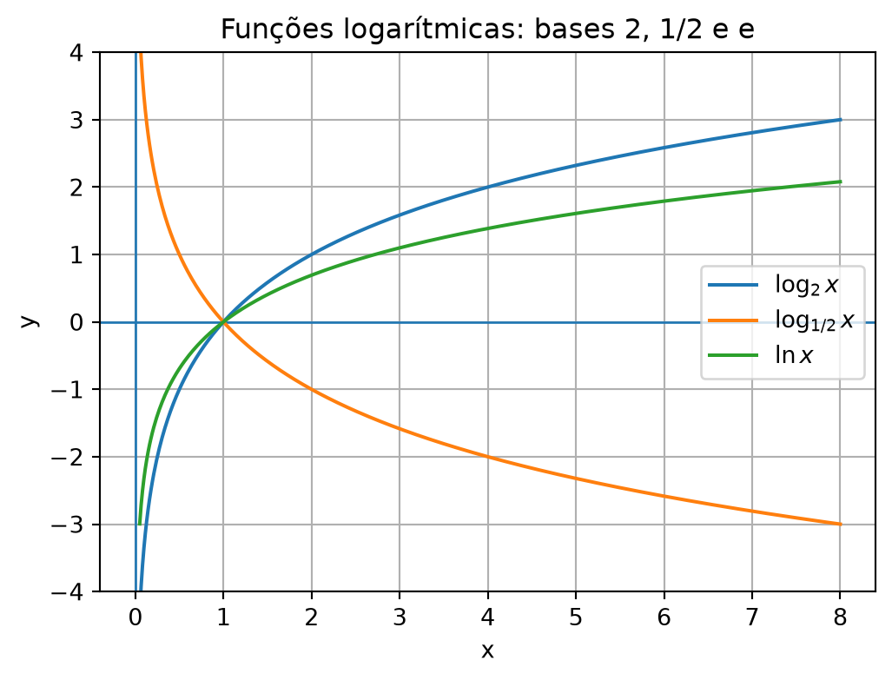
NotaClique para ver o código
import os
import numpy as np
import matplotlib.pyplot as plt
os.makedirs("images", exist_ok=True)
x = np.linspace(0.05, 8, 500)
f = np.log(x) / np.log(2)
g = np.log(x) / np.log(1/2)
h = np.log(x)
plt.figure(figsize=(6, 4.2))
plt.axhline(0, linewidth=1)
plt.axvline(0, linewidth=1)
plt.plot(x, f, label=r"$\log_2 x$")
plt.plot(x, g, label=r"$\log_{1/2} x$")
plt.plot(x, h, label=r"$\ln x$")
plt.title("Funções logarítmicas: bases 2, 1/2 e e")
plt.xlabel("x")
plt.ylabel("y")
plt.ylim(-4, 4)
plt.grid(True)
plt.legend()
plt.savefig("images/1-6-funcoes-logaritmicas.png", dpi=300, bbox_inches="tight")
plt.show()1.8 🌊 Funções trigonométricas
As funções trigonométricas mais importantes no Cálculo inicial são
\[ \sin x,\qquad \cos x,\qquad \tan x. \]
Elas aparecem no estudo de fenômenos periódicos, ondas, movimento circular, oscilações e geometria.
As funções seno e cosseno estão definidas para todos os reais:
\[ D_{\sin}=D_{\cos}=\mathbb{R}. \]
A tangente, por outro lado, não está definida quando
\[ \cos x=0. \]
Portanto, seu domínio exclui os pontos
\[ x=\frac{\pi}{2}+k\pi, \]
com \(k\in\mathbb{Z}\).
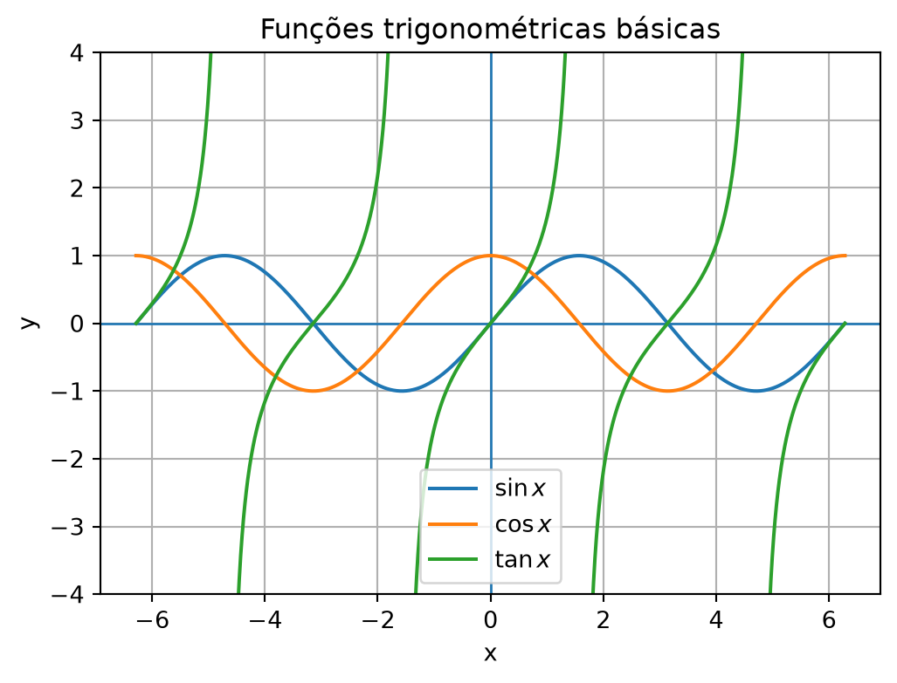
NotaClique para ver o código
import os
import numpy as np
import matplotlib.pyplot as plt
os.makedirs("images", exist_ok=True)
x = np.linspace(-2*np.pi, 2*np.pi, 2000)
sinx = np.sin(x)
cosx = np.cos(x)
tanx = np.tan(x)
tan_plot = tanx.copy()
tan_plot[np.abs(tan_plot) > 6] = np.nan
plt.figure(figsize=(6, 4.2))
plt.axhline(0, linewidth=1)
plt.axvline(0, linewidth=1)
plt.plot(x, sinx, label=r"$\sin x$")
plt.plot(x, cosx, label=r"$\cos x$")
plt.plot(x, tan_plot, label=r"$\tan x$")
plt.title("Funções trigonométricas básicas")
plt.xlabel("x")
plt.ylabel("y")
plt.ylim(-4, 4)
plt.grid(True)
plt.legend()
plt.savefig("images/1-6-funcoes-trigonometricas.png", dpi=300, bbox_inches="tight")
plt.show()1.9 🧭 Domínio e comportamento
Ao estudar uma função elementar, devemos sempre perguntar:
- Qual é o domínio?
- Qual é a imagem?
- O gráfico cresce ou decresce?
- Há zeros?
- Há assíntotas?
- Há simetrias?
- Que tipo de fenômeno essa função pode modelar?
Essas perguntas preparam o caminho para a ideia de limite. O Cálculo começa justamente quando passamos a perguntar o que acontece com \(f(x)\) quando \(x\) se aproxima de certo valor.
1.10 🧾 Uma primeira tabela de referência
| Família | Forma típica | Comentário |
|---|---|---|
| Afim | \(ax+b\) | Gráfico é uma reta |
| Quadrática | \(ax^2+bx+c\) | Gráfico é uma parábola |
| Potência | \(x^n\) | Crescimento algébrico |
| Raiz | \(\sqrt{x}\) | Domínio restrito nos reais |
| Exponencial | \(a^x\) | Crescimento ou decaimento rápido |
| Logarítmica | \(\log_a x\) | Inversa da exponencial |
| Trigonométrica | \(\sin x\), \(\cos x\), \(\tan x\) | Fenômenos periódicos |
1.11 🧾 Quadro-resumo
| Família | Forma típica | Domínio real mais comum | Comportamento principal |
|---|---|---|---|
| Função afim | \(f(x)=ax+b\) | \(\mathbb{R}\) | Reta; cresce se \(a>0\), decresce se \(a<0\) |
| Função quadrática | \(f(x)=ax^2+bx+c\) | \(\mathbb{R}\) | Parábola; concavidade depende do sinal de \(a\) |
| Função potência | \(f(x)=x^n\) | Depende de \(n\) | Pode representar crescimento algébrico ou comportamento racional |
| Função raiz | \(f(x)=\sqrt{x}\) ou variações | Geralmente exige radicando \(\geq 0\) | Tem domínio restrito nos reais |
| Função exponencial | \(f(x)=a^x\), \(a>0\), \(a\neq 1\) | \(\mathbb{R}\) | Cresce se \(a>1\), decresce se \(0<a<1\) |
| Função logarítmica | \(f(x)=\log_a x\) | \((0,+\infty)\) | Inversa da exponencial; exige argumento positivo |
| Funções trigonométricas | \(\sin x\), \(\cos x\), \(\tan x\) | Varia conforme a função | Modelam fenômenos periódicos |
Nota🧭 Ideia central do post
As funções elementares formam o vocabulário básico do Cálculo.
Antes de estudar limites, derivadas e integrais, precisamos reconhecer:
- a fórmula da função;
- seu domínio;
- seu comportamento gráfico;
- seus pontos especiais, como zeros, assíntotas, simetrias ou periodicidade.
2 🧪 Exercícios propostos
Nota📝 Exercícios
2.1 🧪 Exercício 1
Classifique cada função como afim, quadrática, potência, raiz, exponencial, logarítmica ou trigonométrica:
- \(f(x)=3x-2\)
- \(g(x)=x^2-4x+1\)
- \(h(x)=\sqrt{x+5}\)
- \(p(x)=2^x\)
- \(q(x)=\ln x\)
- \(r(x)=\sin x\)
2.2 🧪 Exercício 2
Determine o domínio real das funções:
- \(f(x)=\sqrt{x-3}\)
- \(g(x)=\ln(x+1)\)
- \(h(x)=\dfrac{1}{x}\)
- \(p(x)=\sqrt{4-x^2}\)
2.3 🧪 Exercício 3
Calcule:
- \(f(2)\) para \(f(x)=3x+1\)
- \(g(-1)\) para \(g(x)=x^2+2x\)
- \(h(4)\) para \(h(x)=\sqrt{x}\)
- \(p(3)\) para \(p(x)=2^x\)
2.4 🧪 Exercício 4
Diga se cada afirmação é verdadeira ou falsa:
- A função \(f(x)=x^2\) é afim.
- A função \(f(x)=2^x\) é exponencial.
- A função \(f(x)=\ln x\) está definida para todo \(x\in\mathbb{R}\).
- A função \(f(x)=\sin x\) está definida para todo \(x\in\mathbb{R}\).
2.5 🧪 Exercício 5
Explique, com suas palavras, por que o domínio é uma informação essencial no estudo de funções.
Importante✅ Gabarito
3 ✅ Gabarito comentado
3.1 🧪 Exercício 1
- \(f(x)=3x-2\) é afim.
- \(g(x)=x^2-4x+1\) é quadrática.
- \(h(x)=\sqrt{x+5}\) é uma função raiz.
- \(p(x)=2^x\) é exponencial.
- \(q(x)=\ln x\) é logarítmica.
- \(r(x)=\sin x\) é trigonométrica.
3.2 🧪 Exercício 2
Para \(f(x)=\sqrt{x-3}\), precisamos de \(x-3\geq 0\), isto é, \(x\geq 3\). Logo, \(D_f=[3,+\infty)\).
Para \(g(x)=\ln(x+1)\), precisamos de \(x+1>0\), isto é, \(x>-1\). Logo, \(D_g=(-1,+\infty)\).
Para \(h(x)=\dfrac{1}{x}\), precisamos de \(x\neq 0\). Logo, \(D_h=(-\infty,0)\cup(0,+\infty)\).
Para \(p(x)=\sqrt{4-x^2}\), precisamos de \(4-x^2\geq 0\), isto é, \(x^2\leq 4\). Logo, \(-2\leq x\leq 2\), e \(D_p=[-2,2]\).
3.3 🧪 Exercício 3
\(f(2)=3\cdot 2+1=7\).
\(g(-1)=(-1)^2+2(-1)=1-2=-1\).
\(h(4)=\sqrt{4}=2\).
\(p(3)=2^3=8\).
3.4 🧪 Exercício 4
Falsa. \(f(x)=x^2\) é quadrática.
Verdadeira. \(f(x)=2^x\) é exponencial.
Falsa. \(\ln x\) só está definida, nos reais, para \(x>0\).
Verdadeira. \(\sin x\) está definida para todo número real.
3.5 🧪 Exercício 5
O domínio é essencial porque determina quais entradas são permitidas para a função. Sem conhecer o domínio, podemos tentar calcular valores que não fazem sentido nos reais, como \(\sqrt{-1}\) ou \(\ln 0\), dentro do contexto deste curso.
4 🧩 Quiz — Funções Elementares
Q1. Uma função afim tem forma geral:
✓\(f(x)=ax+b\).
✗\(f(x)=a^x\).
✗\(f(x)=\sqrt{x}\).
Q2. O domínio real de \(\ln x\) é:
✗\(\mathbb{R}\).
✓\((0,+\infty)\).
✗\([0,+\infty)\).
Q3. A função \(e^x\) é especialmente importante no Cálculo porque:
✗Não possui valores positivos.
✗Está definida apenas para \(x>0\).
✓Sua derivada é ela mesma.